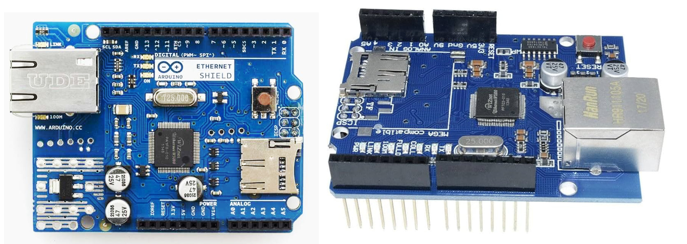
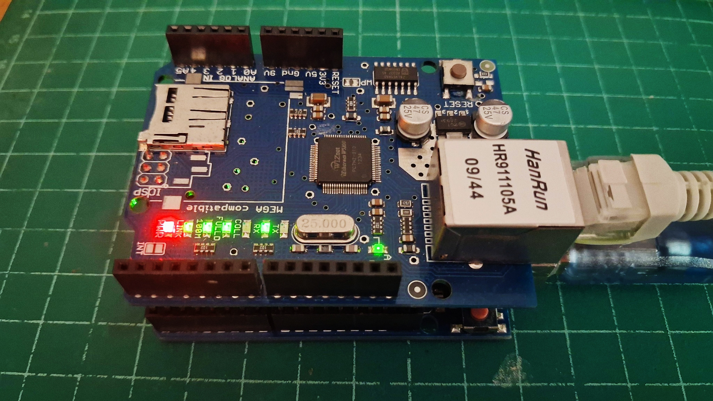
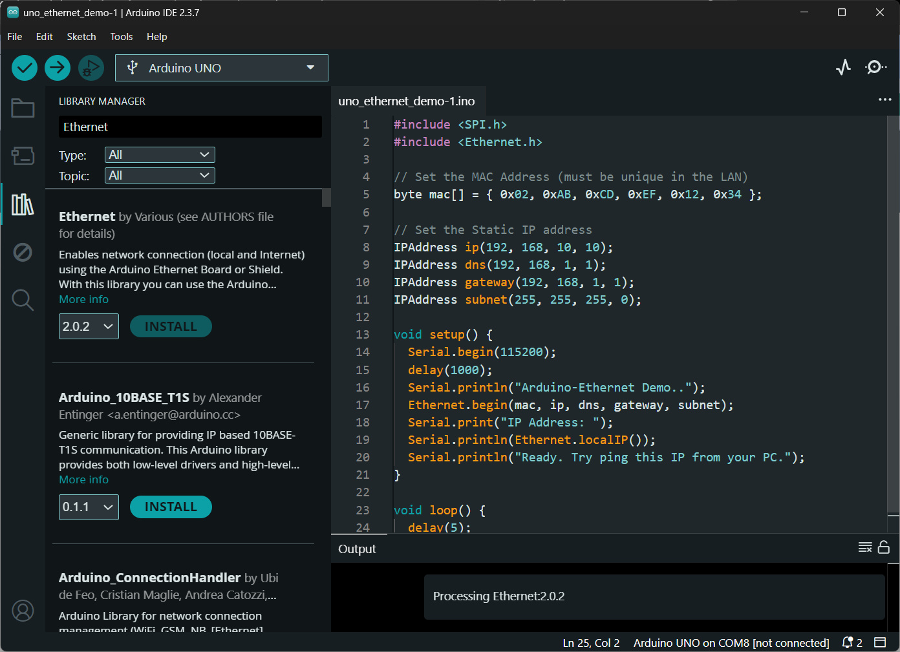
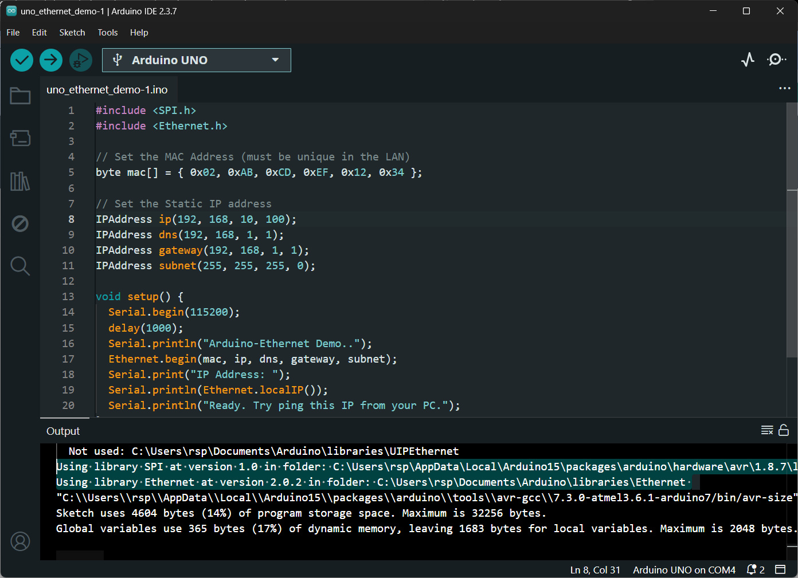
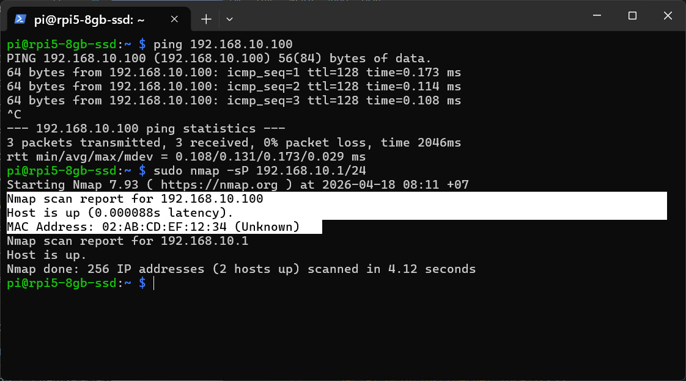
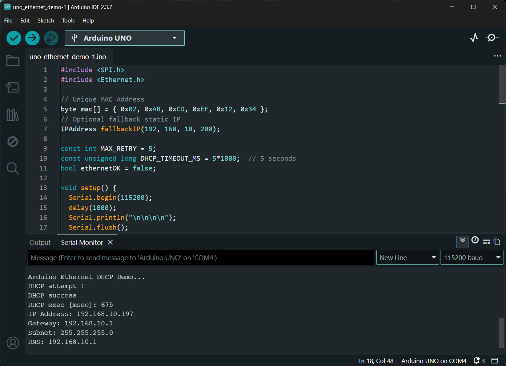
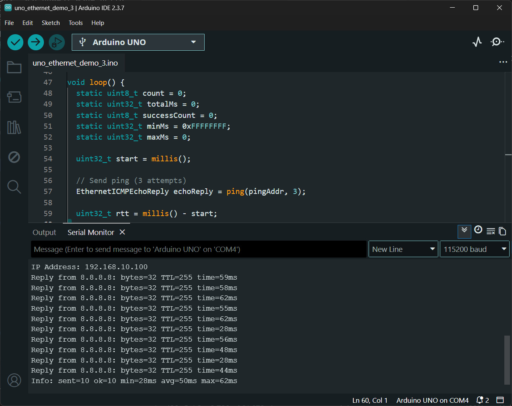
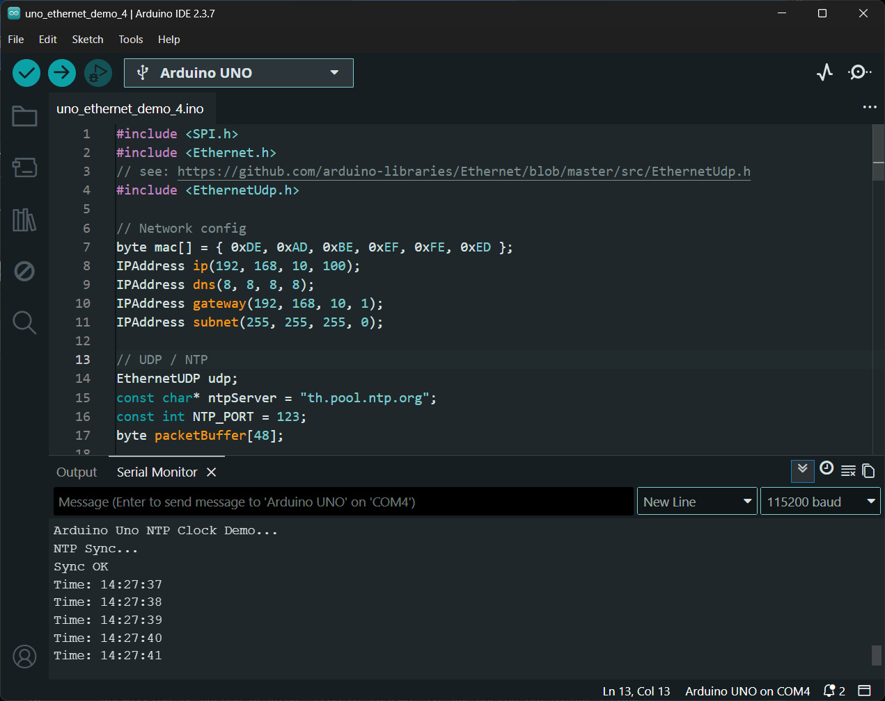

Arduino Uno + W5100 Ethernet Shield: Network Programming (ตอนที่ 1)#
Keywords: Arduino Uno, Arduino Ethernet Shield, Network Programming
- บอร์ด Arduino Uno กับการเชื่อมต่อเครือข่าย LAN
- ตัวอย่างโค้ด: Arduino Ethernet - Static IP Address
- ตัวอย่างโค้ด: Arduino Ethernet - Dynamic IP Address via DHCP
- ตัวอย่างโค้ด Arduino Ethernet - ICMP / Ping
- ตัวอย่างโค้ด Arduino Ethernet - NTP Sync
▷ บอร์ด Arduino Uno กับการเชื่อมต่อระบบเครือข่าย LAN#
บอร์ด Arduino ในยุคแรก เช่น Arduino Uno / Nano / Mega 2560 ใช้ไมโครคอนโทรลเลอร์ AVR สถาปัตยกรรม 8 บิต ซึ่งมีข้อจำกัดด้านหน่วยความจำ และความเร็วในการประมวลผล (SRAM ของ ATmega328P MCU มีเพียง 2 KB และ Flash ขนาด 32KB และความถี่ของซีพียู 16MHz) อีกทั้งยังไม่มีวงจรสื่อสารเครือข่ายในตัว เช่น Ethernet MAC หรือวงจรสื่อสารไร้สาย เช่น Wi-Fi / BLE
ดังนั้น หากต้องการนำบอร์ด Arduino ไปใช้งานด้านระบบเครือข่าย หรือในงานประเภท IoT (Internet of Things) จึงจำเป็นต้องใช้อุปกรณ์เสริม อาจเป็นอุปกรณ์ต่อเพิ่มแบบ Arduino Shield เช่น
หรือเลือกใช้บอร์ดไมโครคอนโทรลเลอร์ที่มีโมดูล Wi-Fi รวมอยู่ด้วย เช่น บอร์ด Arduino UNO WiFi Rev 2 ที่มีโมดูล u-blox NINA-W102
โมดูล Arduino Ethernet Shield มี 2 รุ่น
- Arduino Ethernet Shield ใช้ชิป Wiznet W5100 (SPI Speed: ~14 MHz max.)
- Arduino Ethernet Shield 2 ใช้ชิป Wiznet W5500 (SPI Speed: 80 MHz max.)
ชิป W5100 / W5500 ทำหน้าที่เป็น TCP/IP Offload Engine และเชื่อมต่อกับไมโครคอนโทรลเลอร์ผ่านบัส SPI (Serial Peripheral Interface) ในส่วนของการเชื่อมต่อ ชิปของ Wiznet ทำงานด้วยแรงดันไฟเลี้ยง +3.3V แต่ชิป AVR ใช้แรงดันไฟเลี้ยง +5V
ดังนั้นโมดูล Arduino Ethernet Shield มีการใช้ไอซีลอจิกทำหน้าที่แปลงระดับแรงดัน 5V -> 3.3V เช่น SN74LVC1G14 (Schmitt-Trigger Inverter) และ 74LVC1G125 (Bus Buffer Gate With 3-State Output) ซึ่งดูได้จากไฟล์ Schematic
การใช้งาน Ethernet Shield กับ Arduino Uno ต้องใช้สัญญาณ SPI ดังนี้
/SS(Slave Select): ขา D10 ซึ่งจะต้องถูกกำหนดเป็นเอาต์พุต เพื่อให้ชิป AVR ทำงานในโหมด SPI MasterMOSI(Master Out - Slave In): ขา D11MISO(Master In - Slave Out): ขา D12SCK(Serial Clock): ขา D13
แม้ว่าชิป Wiznet W5100 / W5500 จะรองรับความเร็วระดับ 10/100 Mbps Ethernet แต่ในทางปฏิบัติ ความเร็วที่ได้จะต่ำกว่านี้มาก เนื่องจากข้อจำกัดของไมโครคอนโทรลเลอร์และบัส SPI (ความถี่สูงสุดของสัญญาณ SCK สำหรับ Arduino Uno อยู่ที่ประมาณ 8 MHz)
นอกจากนี้ แม้ว่าชิป Wiznet จะทำหน้าที่จัดการในส่วนของ TCP/IP Stack และช่วยลดภาระของ CPU ได้มาก แต่ก็มีข้อจำกัดด้านจำนวนการเชื่อมต่อ โดยรองรับการเปิดใช้งาน TCP Sockets พร้อมกันได้จำกัด (W5100: สูงสุด 4 sockets และ W5500: สูงสุด 8 sockets)

รูป: โมดูล Arduino Ethernet Shield (Wiznet W5100)

รูป: บอร์ด Arduino Uno + W5100 Ethernet Shield
ในการพัฒนาโปรแกรม สามารถใช้ไลบรารีมาตรฐานของ Arduino ได้แก่

รูป: การติดตั้ง-อัปเดต Arduino Ethernet Library ใน Arduino IDE
ไลบรารีเหล่านี้ช่วยให้สามารถพัฒนาโปรแกรมเครือข่าย (เช่น TCP/UDP) ได้ง่ายขึ้น ไลบรารี Arduino Ethernet ขณะที่เขียนบทความนี้ มีเวอร์ชันล่าสุดคือ v2.0.2 (อัปเดตเมื่อวันที่ 21 มีนาคม ค.ศ. 2023)
ภายในไลบรารีมีโค้ดตัวอย่าง ครอบคลุมการใช้งานเครือข่ายหลายรูปแบบ โดยสามารถจัดกลุ่มได้ เช่น
- TCP Communication / HTTP
ChatServer— ตัวอย่างการสร้าง TCP Server รับส่งข้อความแบบโต้ตอบกันได้TelnetClient— ตัวอย่างการเชื่อมต่อไปยัง Telnet ServerWebClient— ตัวอย่างการสร้าง HTTP Client (GET request)WebClientRepeating— การส่ง HTTP Request เป็นช่วงเวลาWebServer— ตัวอย่างการสร้าง HTTP Server
- UDP Communication
UDPSendReceiveString— ส่ง/รับข้อมูลผ่าน UDPUdpNtpClient— ใช้ UDP ติดต่อ NTP Server เพื่ออ่านเวลา
- Network Configuration / Utilities
DhcpAddressPrinter— ขอ IP Address จาก DHCP ServerEthernetBonjour— ใช้ mDNS/Bonjour สำหรับค้นหาอุปกรณ์ในเครือข่าย LAN
นอกจากนั้นแล้วยังมีไลบรารีของ Arduino อื่นที่น่าสนใจ เช่น
ArduinoModbus
ซึ่งรองรับรูปแบบการสื่อสารผ่านบัส RS485 (Modbus RTU) และ TCP (Modbus TCP)
คำอธิบายเพิ่มเติม
- Static IP vs. Dynamic IP
- Static IP คือ การกำหนด IP Address แบบคงที่ โดยผู้ใช้ตั้งค่าเอง
- Dynamic IP (DHCP: Dynamic Host Configuration Protocol) คือ การรับ IP Address อัตโนมัติจาก DHCP Server เช่น Wireless Router ทำหน้าที่จัดสรร IP
ให้ชั่วคราว และช่วยในการตั้งค่าเครือข่ายให้กับอุปกรณ์โดยอัตโนมัติ เช่น
- IP Address
- Subnet Mask
- Default Gateway
- DNS Server
- IPv4 vs. IPv6
- IPv4 (Internet Protocol version 4) เป็นรูปแบบ IP Address แบบ 32 บิต
แสดงผลเป็นเลข 4 ชุด เช่น
192.168.1.1 - IPv6 (Internet Protocol version 6) เป็นรูปแบบ IP Address แบบ 128 บิต
แสดงผลเป็นเลขฐานสิบหก 8 ชุด เช่น
2001:db8::1และออกแบบมาเพื่อแทน IPv4
- IPv4 (Internet Protocol version 4) เป็นรูปแบบ IP Address แบบ 32 บิต
แสดงผลเป็นเลข 4 ชุด เช่น
- Public vs. Private IPv4
- Public IP Address คือ IP ที่สามารถเข้าถึงได้จาก Internet โดยตรง ถูกกำหนดและจัดสรรโดยผู้ให้บริการอินเทอร์เน็ต และต้องไม่ซ้ำกันทั่วโลก ใช้สำหรับ Server หรืออุปกรณ์ที่ต้องการให้เข้าถึงจากภายนอก
- Private IP Address คือ IP ที่ใช้ภายในเครือข่ายเท่านั้น
ไม่สามารถเข้าถึงได้โดยตรงจาก Internet และสามารถใช้ซ้ำกันในหลายเครือข่ายได้
โดยมีช่วงที่กำหนดตามมาตรฐาน เช่น
10.0.0.0/8,172.16.0.0/12และ192.168.0.0/16โดยทั่วไปอุปกรณ์ใน LAN จะใช้ Private IP และเชื่อมต่อออก Internet ด้วยโปรโตคอล NAT (Network Address Translation) / Masquerade (Source NAT) ซึ่งทำหน้าที่แปลง Private IP เป็น Public IP ของอุปกรณ์ Gateway/Router
- DNS (Domain Name System) คือ ระบบที่ใช้แปลงชื่อโดเมน (เช่น
www.google.com) ให้เป็น IP Address เพื่อให้อุปกรณ์ในเครือข่ายสามารถติดต่อกันได้- mDNS (Multicast DNS) คือ โปรโตคอลที่ใช้ค้นหาและระบุอุปกรณ์ในเครือข่าย LAN
โดยไม่ต้องมี DNS Server กลาง ใช้การส่งข้อมูลแบบ multicast
และมักใช้ชื่อโดเมนในรูปแบบ
.localเช่นarduino.local - Bonjour คือ ชื่อเรียกของระบบ mDNS ที่พัฒนาโดย Apple สำหรับการค้นหาอุปกรณ์และบริการในเครือข่ายแบบอัตโนมัติ (ในระบบ Linux มีบริการที่คล้ายกันชื่อว่า Avahi)
- mDNS (Multicast DNS) คือ โปรโตคอลที่ใช้ค้นหาและระบุอุปกรณ์ในเครือข่าย LAN
โดยไม่ต้องมี DNS Server กลาง ใช้การส่งข้อมูลแบบ multicast
และมักใช้ชื่อโดเมนในรูปแบบ
- ICMP (Internet Control Message Protocol) คือ โปรโตคอลในระดับเครือข่าย (OSI Layer 3) ที่ใช้สำหรับส่งข้อความควบคุมและรายงานสถานะของเครือข่าย เช่น แจ้งข้อผิดพลาด หรือใช้ตรวจสอบการเชื่อมต่อระหว่างอุปกรณ์
- Ping เป็นเครื่องมือที่ใช้โปรโตคอล ICMP โดยจะส่งแพ็กเกต ICMP Echo Request ไปยังปลายทาง และรอรับ ICMP Echo Reply กลับมา และวัดเวลาในการตอบสนอง (Round-Trip Time)
- TCP vs. UDP
- TCP (Transmission Control Protocol) คือ โปรโตคอลแบบ Connection-oriented ที่ต้องสร้างการเชื่อมต่อก่อนส่งข้อมูล มีการทำขั้นตอน Handshake เพื่อรับประกันว่า ข้อมูลครบถ้วนและเรียงลำดับถูกต้อง แต่ช้ากว่า UDP
- UDP (User Datagram Protocol) คือ โปรโตคอลแบบ Connectionless ส่งข้อมูลทันที ไม่ต้องมี Handshake ดังนั้นจึงไม่รับประกันว่า ข้อมูลจะถึงหรือเรียงถูกต้องหรือไม่ ดังนั้นจึงมี Overhead น้อยกว่า TCP
- NTP (Network Time Protocol) คือ โปรโตคอลที่ใช้สำหรับการซิงโครไนซ์เวลา (Time Synchronization) ระหว่างอุปกรณ์ในเครือข่ายผ่านอินเทอร์เน็ต โดยใช้ UDP (User Datagram Protocol) เป็นกลไกในการรับ-ส่งข้อมูลเวลา
▷ ตัวอย่างโค้ด: Arduino Ethernet - Static IP Address#
โค้ดนี้เป็นตัวอย่างการใช้งาน Arduino Uno ร่วมกับ Ethernet Shield โดยกำหนดค่าเครือข่ายแบบ Static IP Address (IPv4) เพื่อให้บอร์ดสามารถเชื่อมต่อเข้าสู่เครือข่าย LAN ได้ โดยมีขั้นตอนการทำงานที่สำคัญดังนี้
- กำหนด MAC Address ให้กับอุปกรณ์ (ต้องไม่ซ้ำในเครือข่าย)
- กำหนดค่าพารามิเตอร์เครือข่ายแบบคงที่ ได้แก่
- IP Address ในตัวอย่างนี้ตั้งค่า IP Address ให้เป็น
192.168.10.100เพื่อใช้งานในเครือข่ายที่มีหมายเลข IP ในช่วง192.168.10.0/24 - Gateway ตั้งค่าให้เป็น
192.168.10.1 - Subnet Mask ตั้งค่าให้เป็น
255.255.255.0 - DNS Server ตั้งค่าให้เป็น
192.168.10.1โดยที่ Gateway ทำหน้าที่เป็น DNS Server ในเครือข่ายด้วย - เรียกใช้ฟังก์ชัน
Ethernet.begin()เพื่อเริ่มต้นการทำงานของ Ethernet
การทำงานของโปรแกรมในฟังก์ชัน setup() และ loop()
- เริ่มต้นการสื่อสารผ่าน
Serialเพื่อใช้แสดงผล - เรียก
Ethernet.begin(mac, ip, dns, gateway, subnet)ซึ่งเป็นการกำหนดค่าเครือข่ายแบบ Static IP และเริ่มต้น Ethernet (ไม่ได้ใช้ DHCP Server ในตัวอย่างนี้) - อ่านค่า IP Address ปัจจุบันด้วยคำสั่ง
Ethernet.localIP() - แสดง IP Address ผ่านทาง Serial Monitor
- ใน
loop()ไม่มีการประมวลผลเพิ่มเติม
#include <SPI.h>
#include <Ethernet.h>
// Set the MAC Address (must be unique in the LAN)
byte mac[] = { 0x02, 0xAB, 0xCD, 0xEF, 0x12, 0x34 };
// Set the Static IP address
IPAddress ip(192, 168, 10, 100);
IPAddress gateway(192, 168, 10, 1);
IPAddress subnet(255, 255, 255, 0);
IPAddress dns(192, 168, 10, 1); // or 8.8.8.8 (Public DNS servver)
void setup() {
Serial.begin(115200);
delay(1000);
Serial.println("Arduino-Ethernet Demo..");
Ethernet.init(10); // Set the /SS pin (Arduino Uno D10 pin)
Ethernet.begin(mac, ip, dns, gateway, subnet);
delay(1000);
if (Ethernet.hardwareStatus() == EthernetNoHardware) {
Serial.println("Ethernet shield not found!");
while (true) delay(1);
}
// Show the IP address
Serial.print("IP Address: ");
Serial.println(Ethernet.localIP());
}
void loop() {
delay(5);
}

รูป: การทำขั้นตอน Build ใน Arduino IDE สำหรับโค้ดตัวอย่าง
เมื่ออัปโหลด Arduino Sketch ไปยังบอร์ด Arduino Uno ได้สำเร็จแล้ว
ให้ทดสอบการเชื่อมต่อเครือข่ายด้วยคำสั่ง ping และ nmap โดยในตัวอย่างนี้ใช้คอมพิวเตอร์
Raspberry Pi SBC / Raspberry Pi OS หรือ Ubuntu เป็นเครื่องทดสอบ
- ใช้คำสั่ง
pingเพื่อตรวจสอบว่า บอร์ด Arduino สามารถตอบสนองในระดับ ICMP ได้หรือไม่
(ยืนยันว่าอุปกรณ์เชื่อมต่ออยู่ในเครือข่ายเดียวกันและสื่อสารได้) - ใช้คำสั่ง
nmap -sP 192.168.10.0/24ใช้สำหรับ Ping Scan / Host Discovery เอาไว้ตรวจว่า มีเครื่องไหนออนไลน์อยู่ในเครือข่าย
ผลลัพธ์ที่ได้จะช่วยยืนยันว่า การตั้งค่า IP Address ถูกต้อง และการเชื่อมต่อ Ethernet ของ Arduino Ethernet ทำงานปกติ

รูป: ตัวอย่างการทำคำสั่ง Linux บน Raspberry Pi (IP = 192.168.10.1) เพื่อตรวจสอบการเชื่อมต่อกับ Arduino Ethernet Shield (IP = 192.168.10.100) ในเครือข่าย LAN
▷ ตัวอย่างโค้ด: Arduino Ethernet - Dynamic IP Address via DHCP#
ตัวอย่างโค้ดนี้สาธิตการเปลี่ยนจากการใช้ Static IP มาเป็นการเชื่อมต่อกับ DHCP Server
เพื่อขอ IP Address แบบไดนามิก โดยมีการกำหนดระยะเวลา timeout และจำนวนครั้งในการพยายามเชื่อมต่อ (Retry) หากไม่สามารถขอ IP จาก DHCP ได้ ภายในเงื่อนไขที่กำหนด ระบบจะเปลี่ยนไปใช้ Static IP (fallback) แทน
#include <SPI.h>
#include <Ethernet.h>
// Unique MAC Address
byte mac[] = { 0x02, 0xAB, 0xCD, 0xEF, 0x12, 0x34 };
// Optional fallback static IP
IPAddress fallbackIP(192, 168, 10, 100);
const int MAX_RETRY = 5;
const unsigned long DHCP_TIMEOUT_MS = 5*1000; // 5 seconds
bool ethernetOK = false;
void setup() {
Serial.begin(115200);
delay(1000);
Serial.println("\n\n\n");
Serial.flush();
Serial.println("Arduino Ethernet DHCP Demo...");
uint32_t ts = millis();
ethernetOK = initEthernetDHCP();
Serial.print("DHCP exec [msec]: ");
Serial.println( millis() - ts );
if (ethernetOK) {
printNetworkInfo();
} else {
Serial.println("Ethernet init FAILED!");
}
}
void loop() {
// Maintain DHCP lease (important for long-running systems)
Ethernet.maintain();
delay(1000);
}
// DHCP Initialization with Retry
bool initEthernetDHCP() {
for (int attempt = 1; attempt <= MAX_RETRY; attempt++) {
Serial.print("DHCP attempt ");
Serial.println(attempt);
unsigned long startTime = millis();
// Try DHCP
int result = Ethernet.begin(mac);
if (result != 0) {
Serial.println("DHCP success");
return true;
}
// Timeout handling
while (millis() - startTime < DHCP_TIMEOUT_MS) {
delay(100);
}
Serial.println("DHCP timeout...");
}
// All retries failed => use static IP for fallback
Serial.println("DHCP failed. Using fallback static IP...");
Ethernet.begin(mac, fallbackIP);
if (Ethernet.localIP() != IPAddress(0, 0, 0, 0)) {
return true; // IP address is valid.
}
return false; // IP address is not valid.
}
// Print Network Info
void printNetworkInfo() {
Serial.print("IP Address: ");
Serial.println(Ethernet.localIP());
Serial.print("Gateway: ");
Serial.println(Ethernet.gatewayIP());
Serial.print("Subnet: ");
Serial.println(Ethernet.subnetMask());
Serial.print("DNS: ");
Serial.println(Ethernet.dnsServerIP());
}

รูป: ตัวอย่างข้อความเอาต์พุตใน Arduino Serial Monitor
ที่แสดงให้เห็นว่า สามารถเชื่อมต่อกับ DHCP Server และได้รับ IP Address
โดยอัตโนมัติ (IP = 192.168.10.197)
▷ ตัวอย่างโค้ด Arduino Ethernet - ICMP / Ping#
ตัวอย่างถัดไปเป็นการทดลองส่งแพ็กเกตตามโปรโตคอล ICMP (Ping)
ไปยังคอมพิวเตอร์บนอินเทอร์เน็ต เช่น 8.8.8.8 (Google Public DNS Server)
เพื่อใช้ตรวจสอบว่า บอร์ด Arduino Uno สามารถเชื่อมต่อกับอินเทอร์เน็ตได้หรือไม่
ในการใช้งาน ICMP (Ping) ร่วมกับ Arduino Ethernet Shield
จะใช้ไลบรารี EthernetICMP (legacy) โดยต้องดาวน์โหลดไดเรกทอรี EthernetICMP จาก GitHub Repo
ในรูปแบบไฟล์ .zip มายังคอมพิวเตอร์ของผู้ใช้ และจากนั้นให้นำเข้าใช้งานใน Arduino IDE ผ่านเมนู
Sketch > Include Library > Add .ZIP Library...
แล้วเลือกไฟล์ EthernetICMP.zip ที่ได้ดาวน์โหลดมาแล้ว
#include <SPI.h>
#include <Ethernet.h>
// Include the library:
// https://github.com/andrew-susanto/Arduino-Ethernet-Icmp
#include <EthernetICMP.h>
// Set the MAC Address (must be unique in the LAN)
byte mac[] = { 0xDE, 0xAD, 0xBE, 0xEF, 0xFE, 0xED };
// Set the static IP address of the Arduino Ethernet shield
IPAddress ip(192, 168, 10, 100);
IPAddress gateway(192, 168, 10, 1);
IPAddress dns(8, 8, 8, 8);
IPAddress subnet(255, 255, 255, 0);
// Target to ping
IPAddress pingAddr(8, 8, 8, 8);
// Use socket 0 (safer default)
SOCKET pingSocket = 0;
// Buffer for printing
char buffer[256];
EthernetICMPPing ping(pingSocket, 0);
void setup() {
Serial.begin(115200);
delay(1000);
// Seed random (avoid same ID every reset)
randomSeed(analogRead(A2));
Serial.println("\nArduino-Ethernet ICMP/Ping Demo..");
// Start Ethernet
Ethernet.begin(mac, ip, dns, gateway, subnet);
Serial.print("IP Address: ");
Serial.println(Ethernet.localIP());
// Re-create ping object with random ID
ping = EthernetICMPPing(pingSocket, (uint16_t)random(0, 65535));
if (Ethernet.linkStatus() == LinkOFF) {
Serial.println("Warning: Ethernet cable disconnected");
}
}
void loop() {
static uint8_t count = 0;
static uint32_t totalMs = 0;
static uint8_t successCount = 0;
static uint32_t minMs = 0xFFFFFFFF;
static uint32_t maxMs = 0;
uint32_t start = millis();
// Send ping (3 attempts)
EthernetICMPEchoReply echoReply = ping(pingAddr, 3);
uint32_t rtt = millis() - start;
if (echoReply.status == SUCCESS) {
// Update stats
totalMs += rtt;
successCount++;
if (rtt < minMs) minMs = rtt;
if (rtt > maxMs) maxMs = rtt;
snprintf( buffer, sizeof(buffer),
"Reply from %d.%d.%d.%d: bytes=%d TTL=%d time=%lums",
echoReply.addr[0], echoReply.addr[1],
echoReply.addr[2], echoReply.addr[3],
32, // fixed payload size
echoReply.ttl, // TTL = Time To Live
rtt ); // RTT = Round Trip Time
} else {
snprintf( buffer, sizeof(buffer),
"Echo request failed; Error: %d",
echoReply.status );
}
Serial.println(buffer);
if (++count >= 10) {
count = 0;
if (successCount > 0) {
snprintf( buffer, sizeof(buffer),
"Info: sent=10 ok=%d min=%lums avg=%lums max=%lums",
successCount,
minMs,
totalMs / successCount,
maxMs );
Serial.println(buffer);
} else {
Serial.println( "Info: 0 successful replies" );
}
// Reset variables
totalMs = 0;
successCount = 0;
minMs = 0xFFFFFFFF;
maxMs = 0;
delay(30000); // pause before next batch
} else {
delay(2000); // interval between pings
}
}

รูป: ตัวอย่างข้อความเอาต์พุตใน Arduino Serial Monitor ที่แสดงให้เห็นว่า สามารถส่งแพ็กเกต ICMP / Ping ไปยัง 8.8.8.8 และมีการตอบกลับได้สำเร็จ
▷ ตัวอย่างโค้ด Arduino Ethernet - NTP Sync#
ตัวอย่างถัดไปสาธิตการใช้งาน UDP ในการส่งแพ็กเกตไปยัง NTP Server เพื่อดึงข้อมูลวันและเวลาปัจจุบัน และนำมาใช้กำหนดค่า Local Time ให้กับบอร์ด Arduino Uno
โดยระบบจะทำการปรับเวลาในตรงกัน (Time Synchronization) กับ NTP Server
เป็นระยะ ๆ โดยเลือกใช้เซิร์ฟเวอร์ th.pool.ntp.org เพื่อให้เวลาภายในระบบมีความถูกต้องและใกล้เคียงเวลามาตรฐานมากที่สุด
#include <SPI.h>
#include <Ethernet.h>
// https://github.com/arduino-libraries/Ethernet/blob/master/src/EthernetUdp.h
#include <EthernetUdp.h>
// Network config
byte mac[] = { 0xDE, 0xAD, 0xBE, 0xEF, 0xFE, 0xED };
IPAddress ip(192, 168, 10, 100);
IPAddress dns(8, 8, 8, 8);
IPAddress gateway(192, 168, 10, 1);
IPAddress subnet(255, 255, 255, 0);
// UDP / NTP
EthernetUDP udp;
const char* ntpServer = "th.pool.ntp.org";
const int NTP_PORT = 123;
byte packetBuffer[48];
// timezone (Thailand UTC+7)
const long tzOffset = 7 * 60 * 60; // in seconds
unsigned long baseEpoch = 0, lastSyncMillis = 0;
// re-sync interval
const unsigned long SYNC_INTERVAL = 2 * 60 * 1000UL;
void setup() {
Serial.begin(115200);
delay(1000);
Serial.println("\n\n\nArduino Uno NTP Clock Demo...");
Serial.flush();
Ethernet.begin(mac, ip, dns, gateway, subnet);
udp.begin((uint16_t)random(1024, 65535));
syncTime(); // initial sync
}
void loop() {
static unsigned long lastPrint = 0;
// print every 1 second
if (millis() - lastPrint >= 1000) {
lastPrint = millis();
printTime();
}
// re-sync with the NTP server
if (millis() - lastSyncMillis >= SYNC_INTERVAL) {
syncTime();
}
}
void sendNTP() {
memset(packetBuffer, 0, 48);
packetBuffer[0] = 0b11100011;
udp.beginPacket(ntpServer, NTP_PORT);
udp.write(packetBuffer, 48);
udp.endPacket();
}
unsigned long getNTP() {
sendNTP();
delay(1000);
if (udp.parsePacket()) {
udp.read(packetBuffer, 48);
unsigned long highWord = word(packetBuffer[40], packetBuffer[41]);
unsigned long lowWord = word(packetBuffer[42], packetBuffer[43]);
unsigned long secs1900 = (highWord << 16) | lowWord;
const unsigned long seventyYears = 2208988800UL;
return secs1900 - seventyYears;
}
return 0;
}
void syncTime() {
Serial.println("NTP Sync...");
unsigned long epoch = getNTP();
if (epoch) {
baseEpoch = epoch + tzOffset;
lastSyncMillis = millis();
Serial.println("Sync OK");
} else {
Serial.println("Sync FAILED");
}
}
unsigned long getLocalEpoch() {
return baseEpoch + (millis() - lastSyncMillis) / 1000;
}
void printTime() {
unsigned long epoch = getLocalEpoch();
int h = (epoch % 86400L) / 3600;
int m = (epoch % 3600) / 60;
int s = epoch % 60;
Serial.print("Time: ");
if (h < 10) Serial.print("0");
Serial.print(h);
Serial.print(":");
if (m < 10) Serial.print("0");
Serial.print(m);
Serial.print(":");
if (s < 10) Serial.print("0");
Serial.println(s);
}

รูป: ตัวอย่างข้อความเอาต์พุตใน Arduino Serial Monitor ที่แสดงให้เห็นว่า สามารถเชื่อมต่อและปรับวันเวลาของระบบในตรงกับ NTP Server ได้
▷ กล่าวสรุป#
บทความนี้นำเสนอตัวอย่างการเขียนโค้ด Arduino Sketch และการใช้ไลบรารีที่เกี่ยวข้อง เพื่อใช้งานบอร์ด Arduino Uno ร่วมกับ Arduino Ethernet Shield (W5100) แต่มีข้อจำกัดบางประการ เช่น ไม่รองรับ TLS/HTTPS ซึ่งเป็นมาตรฐานความปลอดภัยสำคัญในระบบเครือข่ายสมัยใหม่ และไม่รองรับการรับส่งข้อมูลความเร็วสูง
แม้โมดูลดังกล่าวจะจัดอยู่ในกลุ่มอุปกรณ์รุ่นเก่า (legacy / retired) และไม่แนะนำให้ใช้ในโปรเจกต์ใหม่ แต่หากมีอุปกรณ์นี้อยู่แล้ว ยังสามารถนำมาใช้เป็นสื่อในการเรียนรู้พื้นฐานการเขียนโปรแกรมเครือข่าย ด้วย Arduino ได้เป็นอย่างดี
บทความที่เกี่ยวข้อง
This work is licensed under a Creative Commons Attribution-ShareAlike 4.0 International License.
Created: 2026-04-17 | Last Updated: 2026-04-19